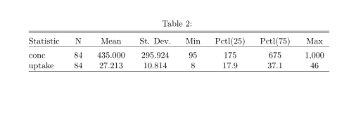
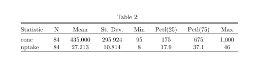

Stargazer
The solution is to use the Stargazer library. The stargazer library contains the stargazer function which does a lot of work for the user to create tables in Latex format. It can even compare multiple models in the same table.
library(stargazer)
mdl2 <- glm(CO2$uptake ~ CO2$Plant, family = Gamma)
stargazer(mdl, mdl2, title = "CO2 Uptake of plants model")##
## % Table created by stargazer v.5.2.2 by Marek Hlavac, Harvard University. E-mail: hlavac at fas.harvard.edu
## % Date and time: Fri, Mar 18, 2022 - 4:40:14 PM
## \begin{table}[!htbp] \centering
## \caption{CO2 Uptake of plants model}
## \label{}
## \begin{tabular}{@{\extracolsep{5pt}}lcc}
## \\[-1.8ex]\hline
## \hline \\[-1.8ex]
## & \multicolumn{2}{c}{\textit{Dependent variable:}} \\
## \cline{2-3}
## \\[-1.8ex] & \multicolumn{2}{c}{uptake} \\
## \\[-1.8ex] & \textit{OLS} & \textit{gamma} \\
## \\[-1.8ex] & (1) & (2)\\
## \hline \\[-1.8ex]
## Plant.L & $-$22.942$^{***}$ & 0.041$^{***}$ \\
## & (3.100) & (0.005) \\
## & & \\
## Plant.Q & $-$4.617 & 0.012$^{***}$ \\
## & (3.100) & (0.004) \\
## & & \\
## Plant.C & 4.668 & $-$0.010$^{**}$ \\
## & (3.100) & (0.005) \\
## & & \\
## Plant$\hat{\mkern6mu}$4 & 2.339 & $-$0.013$^{***}$ \\
## & (3.100) & (0.005) \\
## & & \\
## Plant$\hat{\mkern6mu}$5 & 4.314 & $-$0.011$^{**}$ \\
## & (3.100) & (0.004) \\
## & & \\
## Plant$\hat{\mkern6mu}$6 & $-$0.039 & 0.001 \\
## & (3.100) & (0.004) \\
## & & \\
## Plant$\hat{\mkern6mu}$7 & $-$2.036 & 0.011$^{**}$ \\
## & (3.100) & (0.005) \\
## & & \\
## Plant$\hat{\mkern6mu}$8 & $-$3.278 & 0.016$^{***}$ \\
## & (3.100) & (0.005) \\
## & & \\
## Plant$\hat{\mkern6mu}$9 & $-$9.067$^{***}$ & 0.019$^{***}$ \\
## & (3.100) & (0.005) \\
## & & \\
## Plant$\hat{\mkern6mu}$10 & 0.546 & 0.004 \\
## & (3.100) & (0.004) \\
## & & \\
## Plant$\hat{\mkern6mu}$11 & 1.912 & $-$0.001 \\
## & (3.100) & (0.004) \\
## & & \\
## Constant & 27.213$^{***}$ & 0.041$^{***}$ \\
## & (0.895) & (0.001) \\
## & & \\
## \hline \\[-1.8ex]
## Observations & 84 & 84 \\
## R$^{2}$ & 0.501 & \\
## Adjusted R$^{2}$ & 0.425 & \\
## Log Likelihood & & $-$290.414 \\
## Akaike Inf. Crit. & & 604.827 \\
## Residual Std. Error & 8.203 (df = 72) & \\
## F Statistic & 6.569$^{***}$ (df = 11; 72) & \\
## \hline
## \hline \\[-1.8ex]
## \textit{Note:} & \multicolumn{2}{r}{$^{*}$p$<$0.1; $^{**}$p$<$0.05; $^{***}$p$<$0.01} \\
## \end{tabular}
## \end{table}stargazer(CO2)##
## % Table created by stargazer v.5.2.2 by Marek Hlavac, Harvard University. E-mail: hlavac at fas.harvard.edu
## % Date and time: Fri, Mar 18, 2022 - 4:40:14 PM
## \begin{table}[!htbp] \centering
## \caption{}
## \label{}
## \begin{tabular}{@{\extracolsep{5pt}}lccccccc}
## \\[-1.8ex]\hline
## \hline \\[-1.8ex]
## Statistic & \multicolumn{1}{c}{N} & \multicolumn{1}{c}{Mean} & \multicolumn{1}{c}{St. Dev.} & \multicolumn{1}{c}{Min} & \multicolumn{1}{c}{Pctl(25)} & \multicolumn{1}{c}{Pctl(75)} & \multicolumn{1}{c}{Max} \\
## \hline \\[-1.8ex]
## conc & 84 & 435.000 & 295.924 & 95 & 175 & 675 & 1,000 \\
## uptake & 84 & 27.213 & 10.814 & 8 & 17.9 & 37.1 & 46 \\
## \hline \\[-1.8ex]
## \end{tabular}
## \end{table}The stargazer function will return a latex table by default which requires a latex compiler. This post is written in R markdown and knitted to a html without a latex compiler so I can not demonstrate it natively. You can however knit a RMD file to a pdf which will utilize a latex compiler. I’ve copied these images of the tables from such a pdf file.
 
It is important to note that when displaying a dataframe in stargazer, the function
will default to a summary of results. This performance can be undone will the summary = FALSE
as a parameter of the function.

It is important to note that when displaying a dataframe in stargazer, the function
will default to a summary of results. This performance can be undone will the summary = FALSE
as a parameter of the function.
With some basic understanding of the La-Tex language, you can understand what stargazer is providing. Its nothing fancy that you couldn’t write yourself. It is the convenience at which you can create these tables that makes it important.